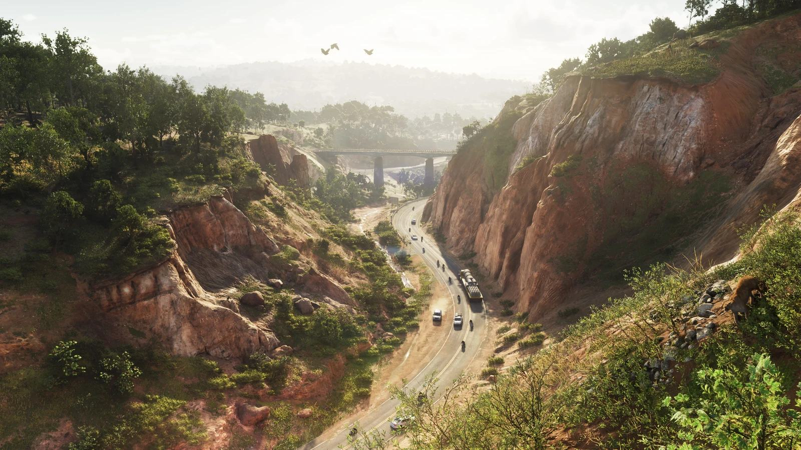

How long is GTA 6?

How long is the GTA 6 intro?
About 46 minutes from pressing start to free roam. Hands-on launch-night play found the opening is a scripted stretch, cinematics, the credits sequence and the first story missions, and free roam only begins when Jason arrives at his house. The opening scene itself (Jason and Lucia's first meeting, two years before the main story) plus the credits runs about 7 minutes in hands-on footage. Your time will vary a little with how fast you play. Reported
Careful with the word "prologue": some guides use it for the entire Jason-only stretch at the start of Chapter 1, until Lucia joins the story, reported at around 4 to 5 hours. That is a different thing from the intro above. Rockstar has not published an official intro length. Not announced
For what actually happens in the opening, see our Mission 1, the opening page.
What we actually know
GTA 6 follows two protagonists, Jason and Lucia, across the state of Leonida, a larger setting than GTA V's Los Santos. Rockstar has not published a mission count or an official completion time, but launch-week playthroughs now give a clear tested range, below.
For context: GTA V
GTA V's main story took most players roughly 30 hours, and far longer for full completion. That is the previous game, given only as a yardstick, it is not evidence of GTA 6's length.
How long is the story? (tested)
Reviewers and guide writers who finished the game in launch week agree on the range, and it is much longer than GTA V's roughly 30-hour story: Reported
- About 53 hours, the fastest story-only playthrough (Polygon), focused on clearing the story.
- 60 to 80 hours, the typical range with optional missions and side content (PowerPyx: 60-80; GameSpot: 65+ hours on the main campaign).
- About 80 hours, Rockstar North co-studio head Rob Nelson's own pre-launch playthrough, story plus optional goals with narrative consequences (via The New York Times).
- About 200 hours, 100% completion (GameSpot, PowerPyx and VGC all put it at 200 hours or more).
Rockstar has published no official length, so these are tested figures from outlets that played the game through, labelled Reported, not Confirmed. Your own time depends on how much side content you do: players who take their time pass 100 hours well before the credits. Start with what to do first in GTA 6.
Do GTA 6 missions have time limits?
Story missions have no countdown timer, and the gold-medal time objectives from older GTA games are gone. The exception is a set of optional missions marked with an hourglass icon on the map: those are time-sensitive and can expire and be missed if you leave them too long, so do them as soon as they appear. Missing one does not affect trophies or 100% completion. Because timed missions can vanish, keep a manual save before starting one. Reported
Sources: GameSpot (how time passes and missable content); PowerPyx (full walkthrough notes). Story-length figures: Polygon (53-hour fastest playthrough), GameSpot (65+ hours), PowerPyx (60-80 hours, 200 hours for 100%), VGC (about 60 hours main missions only, 200+ hours for 100%). Checked 28 November 2026.
FAQ
How long is the GTA 6 intro?
About 46 minutes until free roam, reported from hands-on launch-night play. The opening scene and credits alone run about 7 minutes. Rockstar has not announced an official intro length.
How long is the GTA 6 prologue?
It depends what you mean. The scripted opening up to free roam takes about 46 minutes. Some guides use "prologue" for the whole Jason-only stretch of Chapter 1, before Lucia joins, that is reported at around 4 to 5 hours.
How long is GTA 6's story?
About 50 to 80 hours for the main story: the fastest story-only run took about 53 hours (Polygon), GameSpot took 65+ hours, and PowerPyx took 60 to 80 hours with optional missions. 100% completion takes about 200 hours. Rockstar has published no official length.